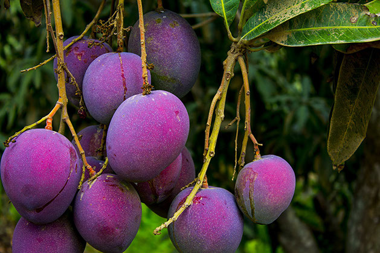
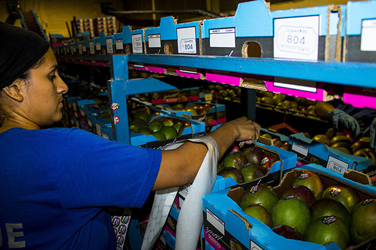
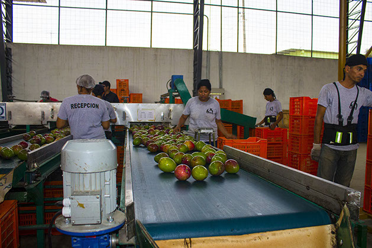

Mango Tommy Atkins
Variedad comercial reconocida por su resistencia, presentación y consistencia durante el proceso de exportación.
Fruta seleccionada por firmeza, color, madurez y condiciones de empaque para mercados internacionales.
Variedad comercial reconocida por su resistencia, presentación y consistencia durante el proceso de exportación.


Nuestras actividades se orientan a exportar fruta de calidad hacia Estados Unidos, Canadá y Europa.
